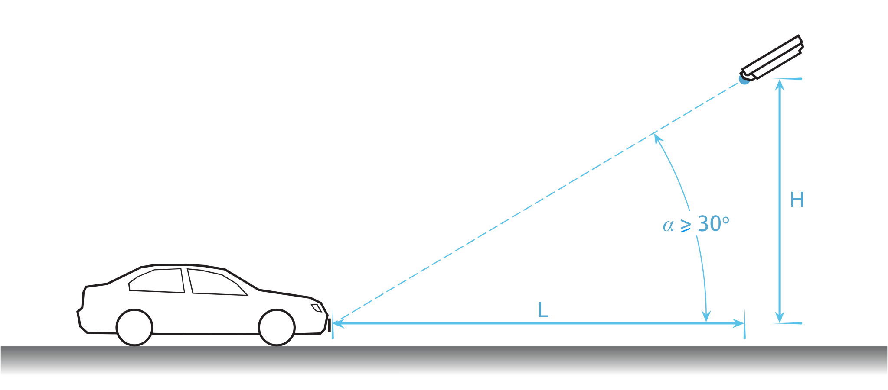
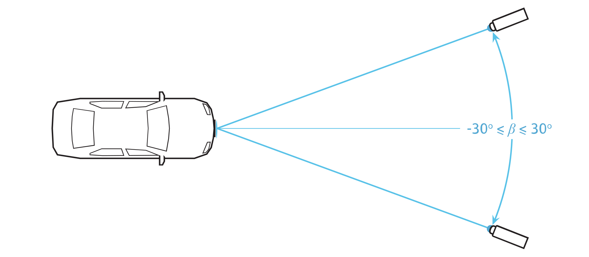
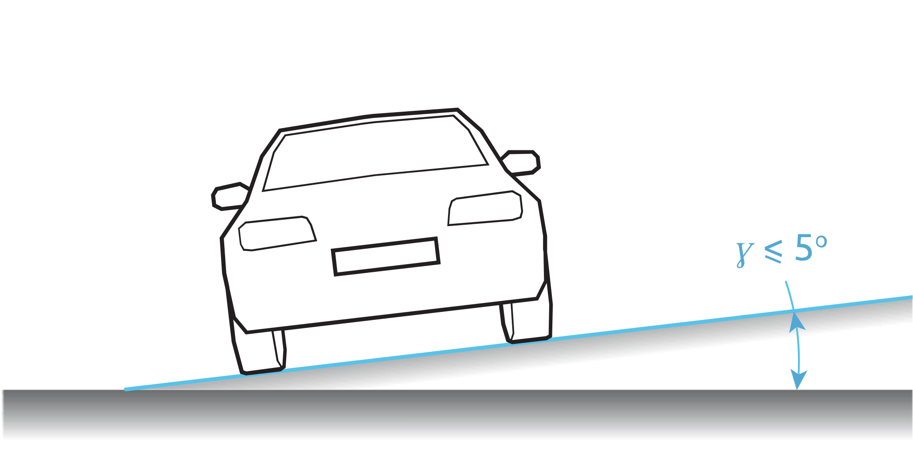

1. Pozycja¶
Podczas wybierania punktu montażowego kamery ANPR, należy wziąć pod uwagę wytyczne opisane w poniższych podsekcjach.
1.1. Wysokość¶
Pozycja kamery powinna być wybrana w taki sposób, aby można było obserwować ruch tablicy rejestracyjnej podczas przejazdu pojazdu. Dlatego zaleca się, aby kamera była zamontowana na wysokości nieco powyżej dachu pojazdu:
Wysokość montażu zależy od dostępności konstrukcji montażowych, a w praktyce oznacza to:
Ostrzeżenie
Zamontowanie kamery zbyt nisko (np. na poziomie dachu pojazdu) spowoduje, że kamera może być oślepiana w nocy przez reflektory samochodu, a także uniemożliwi analizę ruchu pojazdu (np. wykrywanie kierunku lub określanie prędkości).
1.2. Odległość¶
Odległość  od kamery do linii detekcji (patrz punkt Linia detekcji) jest bezpośrednio wyprowadzana z wysokości instalacji kamery . Optymalna odległość to odległość, dla której kąt
od kamery do linii detekcji (patrz punkt Linia detekcji) jest bezpośrednio wyprowadzana z wysokości instalacji kamery . Optymalna odległość to odległość, dla której kąt  między osią optyczną kamery a płaszczyzną drogi wynosi .
między osią optyczną kamery a płaszczyzną drogi wynosi .
Na przykład, dla wysokości montażu można obliczyć:
Kąt można dostosować do warunków konkretnego systemu pomiarowego, ale powinien mieścić się w zakresie:
Ostrzeżenie
Jeśli kąt jest zbyt mały (), może dojść do przysłaniania pojazdów jadących jeden za drugim. Jeśli kąt jest zbyt duży (), geometria tablicy rejestracyjnej zostanie zaburzona – a w nocy światło z oświetlacza podczerwieni nie będzie się prawidłowo odbijać, co osłabi wykrywanie pojazdów.
W poniższej tabeli wskazano optymalną odległość w odniesieniu do wysokości montażu kamery. Dla wskazanej wysokości podano także minimalną i maksymalną odległość wynikające z ograniczeń kątów:
Wysokość |
Odległość min. |
Odległość opt. |
Odległość maks. |
|---|---|---|---|
2.0 m (6.6 ft) |
3.5 m (11.5 ft) |
4.8 m (15.7 ft) |
7.5 m (24.6 ft) |
2.5 m (8.2 ft) |
4.3 m (14.1 ft) |
6.0 m (19.7 ft) |
9.3 m (30.5 ft) |
3.0 m (9.8 ft) |
5.2 m (17.1 ft) |
7.2 m (23.6 ft) |
11.2 m (36.7 ft) |
3.5 m (11.5 ft) |
6.1 m (20.0 ft) |
8.4 m (27.6 ft) |
13.1 m (43.0 ft) |
4.0 m (13.1 ft) |
6.9 m (22.6 ft) |
9.7 m (31.8 ft) |
14.9 m (48.9 ft) |
4.5 m (14.8 ft) |
7.8 m (25.6 ft) |
10.9 m (35.7 ft) |
16.8 m (55.1 ft) |
5.0 m (16.4 ft) |
8.7 m (28.5 ft) |
12.1 m (39.7 ft) |
18.7 m (61.4 ft) |
5.5 m (18.0 ft) |
9.6 m (31.5 ft) |
13.3 m (43.6 ft) |
20.6 m (67.6 ft) |
6.0 m (19.7 ft) |
10.4 m (34.1 ft) |
14.5 m (47.6 ft) |
22.4 m (73.5 ft) |
6.5 m (21.3 ft) |
11.3 m (37.1 ft) |
15.7 m (51.5 ft) |
24.3 m (79.7 ft) |
7.0 m (23.0 ft) |
12.2 m (40.0 ft) |
16.9 m (55.5 ft) |
26.2 m (86.0 ft) |
7.5 m (24.6 ft) |
13.1 m (43.0 ft) |
18.1 m (59.4 ft) |
28.1 m (92.2 ft) |
8.0 m (26.2 ft) |
13.9 m (45.6 ft) |
19.3 m (63.4 ft) |
29.9 m (98.1 ft) |
8.5 m (27.9 ft) |
14.8 m (48.6 ft) |
20.5 m (67.3 ft) |
31.8 m (104.3 ft) |
9.0 m (29.5 ft) |
15.7 m (51.5 ft) |
21.7 m (71.2 ft) |
33.7 m (110.6 ft) |
9.5 m (31.1 ft) |
16.6 m (54.5 ft) |
22.9 m (75.2 ft) |
35.5 m (116.5 ft) |
10.0 m (32.8 ft) |
17.4 m (57.1 ft) |
24.1 m (79.1 ft) |
37.4 m (122.7 ft) |
Aby zapewnić niezawodne rozpoznawanie, ogniskowa obiektywu kamery powinna być wystarczająca do osiągnięcia wymaganej liczby pikseli dla znaku (patrz Rozmiar znaków).
1.3. Kąt¶
Kamera ANPR może być zamontowana w pasie ruchu lub na jego krawędzi:
Ważne jest, aby kąt poziomy pomiędzy osią optyczną kamery a osią drogi nie był większy niż :
Ostrzeżenie
Jeśli znajduje się poza wskazanym zakresem, zniekształcenie obrazu może powodować pogorszenie jakości detekcji (znaki na tablicy rejestracyjnej będą zbyt wąskie), a oświetlenie IR nie będzie odpowiednie (zbyt mała ilość odbitego światła).
1.4. Pochylenie¶
Podczas konfigurowania kamery ANPR zwracaj uwagę na prawidłowe wypoziomowanie - dłuższa krawędź tablicy rejestracyjnej powinna być równoległa do poziomej krawędzi pola widzenia kamery:
Zaleca się, aby kąt nachylenia mieścił się w zakresie , ale musi być w zakresie:
Aby to osiągnąć, może być konieczne użycie specjalnych uchwytów montażowych do kamer lub podkładek poziomujących kamery.